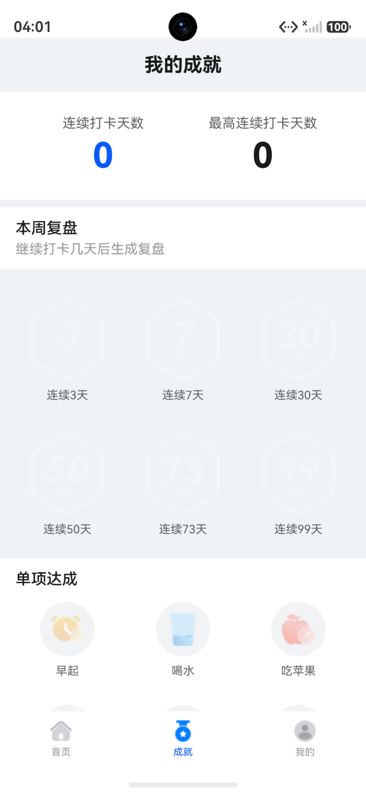
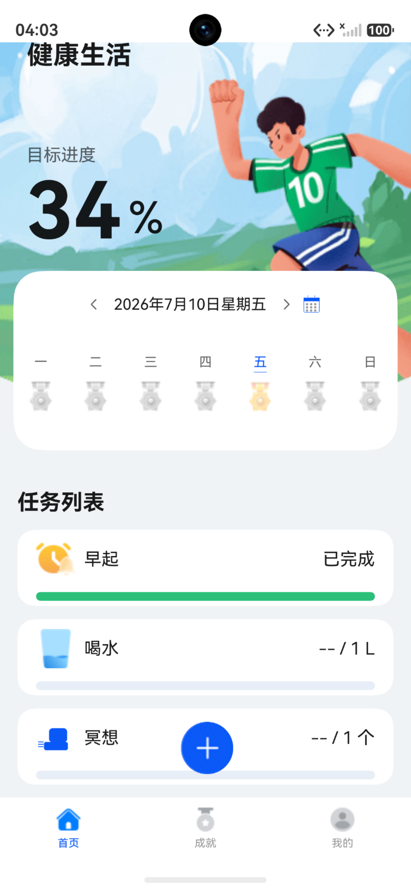
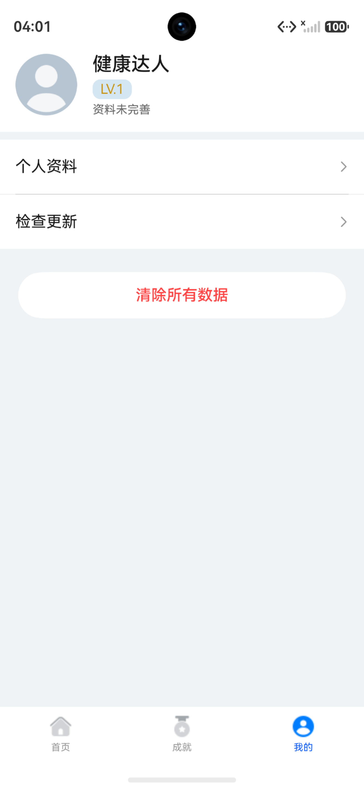
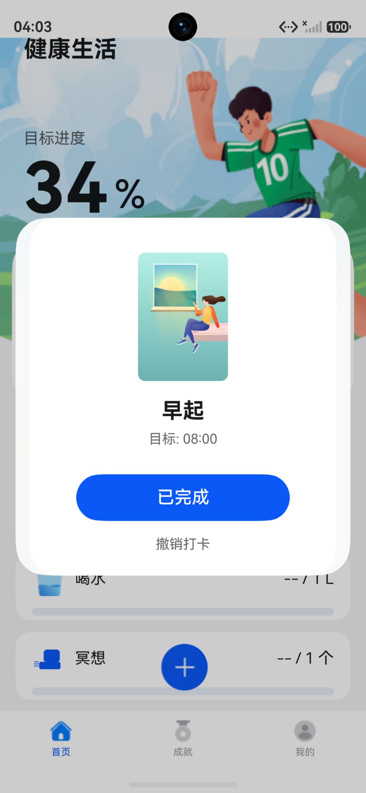
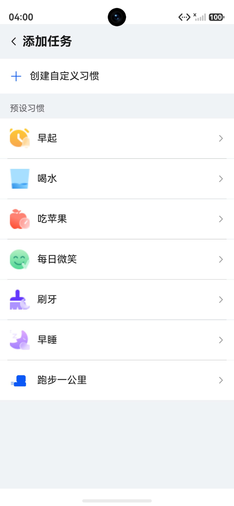
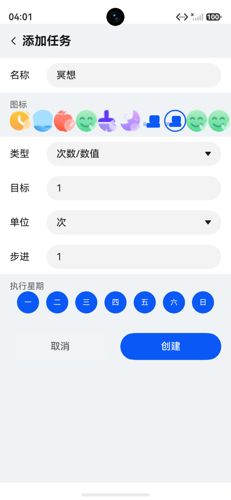
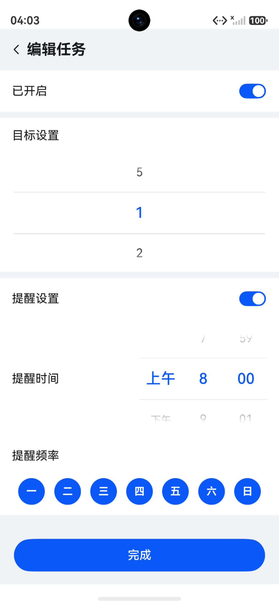
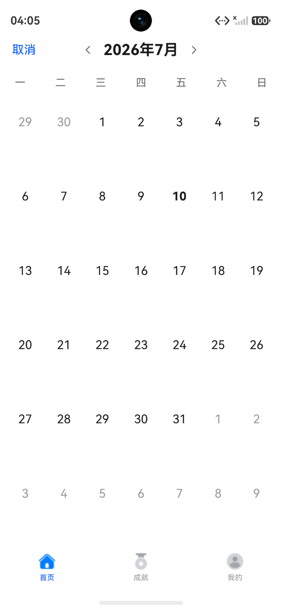
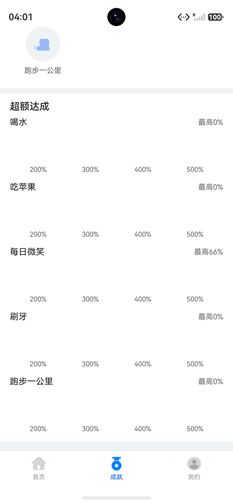
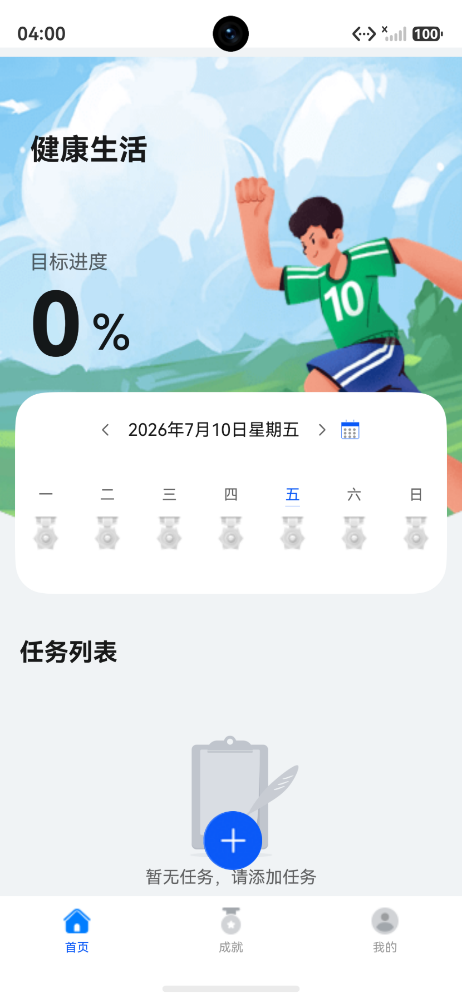

1. 首页与每日打卡
首页是用户的核心操作入口，展示当天目标进度、周日历、任务列表和底部导航。 用户点击任务卡片打开打卡弹窗，根据任务类型完成打卡操作。
- 顶部展示当天总体完成百分比和连续打卡天数
- 周日历显示近三周日期和完成状态，支持点击切换查看日期
- 任务列表展示每个任务的名称、图标、进度条和完成状态
- 底部导航切换首页、成就页和我的页面
基于 HarmonyOS ArkTS 与 ArkUI 框架开发的健康习惯管理应用。 涵盖习惯配置、每日打卡、连续天数激励、成就系统、周复盘、补救机制、 自定义习惯、服务卡片和个人资料管理等核心功能，形成完整的健康习惯管理闭环。



健康习惯的养成依赖于持续的记录与正向反馈。本项目旨在开发一款运行于 HarmonyOS 平台的健康习惯管理应用， 帮助用户配置和跟踪每日健康习惯（如早起、喝水、跑步等），通过连续打卡、成就徽章、周复盘等激励机制提升用户坚持动力， 并提供个人资料管理和数据清除等完整的应用功能。
项目采用 HarmonyOS ArkTS 声明式 UI 框架开发，单模块 entry 承载全部代码。 按职责划分为页面层（pages/components）、状态管理层（viewmodel）、领域规则层（domain/rules）、 服务层（services）和数据持久化层（data），形成清晰的分层架构。
首页是用户的核心操作入口，展示当天目标进度、周日历、任务列表和底部导航。 用户点击任务卡片打开打卡弹窗，根据任务类型完成打卡操作。
打卡弹窗根据任务类型展示不同的进度信息和操作按钮。 数值类任务（如喝水、跑步）按步进值累加，多次打卡后达到目标完成； 一次性任务（如早起、早睡）一次打卡即完成。已完成的任务可撤销最近一次打卡。

添加任务页展示 7 个预设健康习惯的开启状态，用户可直接切换开关启用或停用任务。 页面顶部提供"创建自定义习惯"入口，引导用户进入自定义表单。

自定义习惯功能允许用户创建个性化健康目标。表单包含名称输入、图标选择、目标类型选择 （是否完成 / 次数数值 / 时间目标）、目标值、单位、步进值和执行星期配置。 创建时进行输入校验，防止空值、非法格式和零值。

编辑任务页支持修改目标值和提醒设置。预设任务可编辑目标值和提醒开关； 自定义任务可完整编辑名称、图标、类型、目标、单位、步进和执行星期， 并支持软删除（归档后从列表移除但保留历史记录）。

月视图以整月日历形式展示完成状态，用不同颜色标识全部完成、部分完成、未完成和无记录四种状态。 支持月份切换，点击日期可回到首页查看当天详情。补救状态以特殊样式标识。

成就页展示连续打卡天数、最高连续天数、本周复盘和成就徽章。 连续天数阈值分为 3/7/30/50/73/99 天六级，达标时弹出解锁动画。 周复盘汇总本周完成率、最稳定任务和最易遗漏任务，并给出调整建议。
补救机制为用户提供了容错能力。当天完成率达到 70% 但未全部完成时，可使用每周一次的补救机会， 保持连续天数不中断。首页在满足条件时显示补救提示卡片，用户确认后生效。

我的页面展示用户头像、昵称、性别、年龄摘要和动态等级。 等级根据最高连续打卡天数计算（LV.1-LV.7），体现用户坚持程度。 点击用户卡进入资料编辑页，可修改头像、昵称、性别、出生日期、身高和体重。
"我的"页面底部提供"清除所有数据"功能。确认后清空所有打卡记录、连续天数、个人资料和自定义任务， 取消已设置的提醒，重新初始化默认任务和今日数据。清除后首页恢复初始状态。

项目采用五层分层架构，各层职责清晰、单向依赖。业务规则以纯函数形式实现， 不依赖 HarmonyOS 运行时，可独立进行单元测试。UI 层通过 ViewModel 访问领域层和服务层， 数据读写由 Repository 层封装。
任务完成逻辑由 TaskRules 纯函数处理，支持三种任务类型，打卡和撤销均为不可变操作（返回新对象）。
连续天数状态由 ConsecutiveDaysRules 管理，支持完成计数、撤销回退、跨天检查和补救保持。
使用 RelationalStore（RDB）存储任务配置、每日进度和打卡记录，Preferences 存储连续天数状态和个人资料。
通过 FormKit 实现桌面服务卡片，展示今日完成进度。提醒服务基于 ReminderAgent 按时间和星期频率调度。
项目通过 Git 进行版本管理，共 14 次提交，从基础骨架到完整功能闭环经历了多轮迭代。 以下列出关键里程碑和问题修复节点。
搭建 HarmonyOS 项目基础结构，建立分层架构和数据模型。
新增跑步任务，扩展数值型任务目标选择，加入月视图和跑步周频率提醒配置，补充单元测试。
月历热力图稳定化、智能目标建议、补救机制、多维成就与周复盘、自定义习惯任务、用户等级动态化。
修复 Resource 数字 ID 被当作字符串显示的问题，预设习惯名称在页面和服务卡片中正确展示。
修复身高、体重、出生日期因 TextInput 双向绑定问题无法稳定输入的问题，改为内联输入交互。
修复自定义任务编辑、非执行日统计、服务卡片名称显示和输入校验等问题。
修复周复盘任务名解析、提醒同步、归档卡片数据、补救成就解锁等边界问题。
修复数值类任务一次打卡即完成、撤销一次即全部取消的问题，确保按 step 正确累加和回退。
构建验证：
$ hvigorw assembleHap --no-daemon
> hvigor BUILD SUCCESSFUL
单元测试覆盖：
测试文件：15 个
测试用例：277 个
测试套件：14 个（含 LocalUnit、NumericCheckin、HomeStoreFlow、
PersistenceSemantics、MonthView、GoalSuggestion、Recovery、
AchievementUpgrade、WeeklyReview、UserLevel、CustomTask、
ProfileStore、RegressionBugScan 等）
测试框架：Hypium（@ohos/hypium）
测试内容：打卡规则、连续天数、补救机制、成就计算、
周复盘、用户等级、自定义任务 CRUD、数据持久化、
月视图状态、表单数据映射等
从习惯配置、每日打卡、历史回顾到成就激励，形成完整的健康习惯管理流程，非单纯的功能堆砌。
所有业务规则（打卡、连续天数、补救、成就、周复盘）以纯函数实现，不依赖运行时，可独立测试。
支持用户创建自定义习惯，配置图标、目标、单位、步进和执行星期，突破预设任务的局限。
每周一次补救机会保持连续天数不中断，兼顾坚持激励和现实容错需求。
NewHealthyLife 已完成一个健康习惯管理应用的主要功能闭环。用户可以配置预设或自定义习惯， 在首页完成每日打卡，通过月视图回顾历史状态，在成就页获得长期反馈，使用补救机制保持连续， 并在个人中心维护资料信息和清除数据。项目采用分层架构，业务规则以纯函数实现， 配备 277 个单元测试用例覆盖核心逻辑。
后续可进一步优化方向包括：数据趋势图表、任务模板库、深色模式完整适配、 云端数据同步、健康传感器数据联动、桌面快捷打卡小组件等。 当前版本已具备完整的课程项目展示价值，体现了 HarmonyOS 应用开发中的 页面构建、状态管理、数据持久化、领域规则设计和服务集成能力。